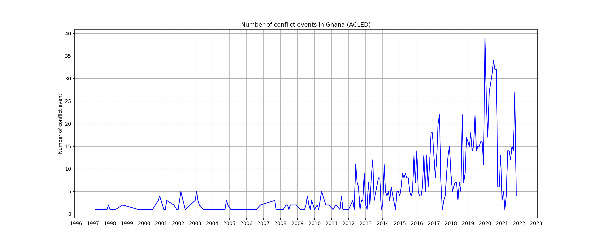
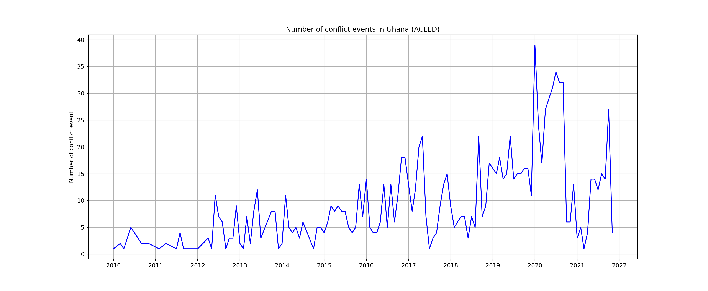
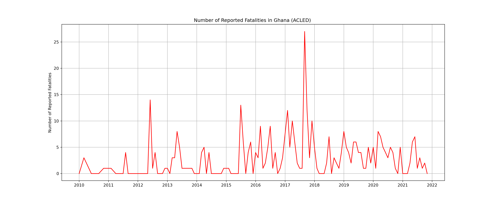
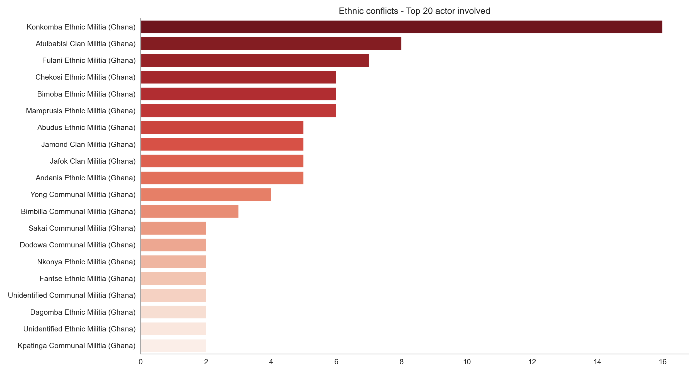

Exploratory Data Analysis using using Python’s Pandas library to understand the data, identify partterns of conflict and making initial observations. Matplotlib and Seaborn libraries for simple visualization. Plotly library for interactive visualisation.
Notebook configuration
Code
import warningswarnings.simplefilter(action='ignore', category=FutureWarning)import numpy as npimport pandas as pdfrom datetime import datetimeimport seaborn as snsimport matplotlib.pyplot as pltimport plotly.express as pximport plotly.graph_objects as gofrom plotly.subplots import make_subplotsimport altair as altfrom IPython.display import Markdownfrom tabulate import tabulatefrom Wrangledata import wrangle #Our function# Number of rows and columnspd.set_option('display.max_rows', 150)pd.set_option('display.max_columns', 150)pd.set_option('display.max_colwidth', 500)
# Plot Mapbox location and event typefig = px.scatter_mapbox( df, # Our DataFrame lat="latitude", lon="longitude",# width=1000, # Width of map# height=700, # Height of map# size="fatalities", color="event_type",# Display notes when hovering mouse over event hover_data=["interaction","year","fatalities","location"], )fig.update_layout(mapbox_style="open-street-map")
Data exploratory
Event
Code
# number of recordsprint("event county count:",df["admin1"].nunique(),"\n","event state count:",df["admin2"].nunique(),"\n","event type count:",df["event_type"].nunique(),"\n","event sub_event_type count:",df["sub_event_type"].nunique())
event county count: 16
event state count: 175
event type count: 5
event sub_event_type count: 16
Code
event_type=df["event_type"].value_counts()event_type# Interactive with plotly
fig = go.Figure(data=[go.Pie(labels=event_type.index, values=event_type, pull=[0.1, 0, 0.2,0, 0])])fig.update_layout( title_text="<b> Total Type of Event percentage since 1997<b>", titlefont={'color':None, 'size': 15, 'family': 'San-Serif'},# showlegend=False, # autosize=False,# width=600,# height=400, )# event and sub_event
Code
sub_event=df.groupby(["event_type","sub_event_type"] )["event_date"].agg({'count'}).reset_index()# sub_event# Event type and Sub event type visualisation fig = (px.sunburst(sub_event, path=['event_type', 'sub_event_type'], values='count', width=600, # Width of map height=600,).update_traces(textinfo="label+percent parent").update_layout( title="<b> Event type and Sub event type percentage in Ghana (ACLED)<b>", titlefont={'color':None, 'size': 15, 'family': 'San-Serif'},# showlegend=False, # height=500, # width=750, ))fig
no victicme 503
civilians 357
state forces 201
communal militias 104
rioters 68
political militias 35
other forces 3
protesters 3
rebel groups 2
Name: inter2, dtype: int64
Code
fig = (make_subplots(rows=1, cols=2, specs=[[{'type':'domain'}, {'type':'domain'}]]).add_trace(go.Pie(labels=actor_type1.index, values=actor_type1,name="Actor type1"),1,1).add_trace(go.Pie(labels=actor_type2.index, values=actor_type2,name="Actor type2"),1,2).update_traces(hole=.6, hoverinfo="label+percent+name") .update_layout( title="<b> Actor type involved in Ghana conflict<b>", titlefont={'color':None, 'size': 20, 'family': 'San-Serif'},# showlegend=False, # height=600, # width=1000,# Add annotations in the center of the donut pies. annotations=[dict(text='<b>instigator', x=0.16, y=0.5, font_size=10, showarrow=False),dict(text='<b>victime/hit back', x=0.88, y=0.5, font_size=10, showarrow=False)] ))fig
Conflict trend
Let look at the trend of conflict
Code
from matplotlib.dates import DateFormatterimport matplotlib.dates as mdates# Add labels to the plotstyle =dict(size=12, color='black')fig, ax = plt.subplots(figsize=(17, 7))number_ev=df["event_type"].groupby([df['event_date'].dt.year.rename('year'), df['event_date'].dt.month.rename('month')]).agg({'count'})number_ev.index = [pd.datetime(year, month,1)for (year,month) in number_ev.index]number_ev.reset_index(inplace=True)ax.plot('index','count', data=number_ev,color="b")# Format the x axis ax.xaxis.set_major_locator(mdates.YearLocator(base=1))ax.grid(True)plt.ylabel("Number of conflict event")plt.title("Number of conflict events in Ghana (ACLED)");ax

From 2010 to Present
Base on previews trend, let subset the data and analyze from 2010 to present day
Code
df=df[df["year"]>2009]fig, ax = plt.subplots(figsize=(17, 7))number_ev=df["event_type"].groupby([df['event_date'].dt.year.rename('year'), df['event_date'].dt.month.rename('month')]).agg({'count'})number_ev.index = [pd.datetime(year, month,1)for (year,month) in number_ev.index]number_ev.reset_index(inplace=True)# plotax.plot('index','count', data=number_ev,color="b")# Format the x axis ax.xaxis.set_major_locator(mdates.YearLocator(base=1))ax.grid(True)plt.ylabel("Number of conflict event")plt.title("Number of conflict events in Ghana (ACLED)");ax

Another view using Bar plot
Code
year_event = pd.crosstab(df.year,df.event_type).reset_index()fig = px.bar(year_event, x="year", y=["Protests","Riots","Violence against civilians","Battles","Strategic developments"], title=" <b> Political violence & protest events in Ghana (2010 - 13 nov 2021) <b>", labels={'value':'Number of Event','variable':'<b>Event Type'} ,# width=1000, # Width of map# height=600 )fig.update_layout(# barmode='group', # comment this line to see stacked bar titlefont={'color':None, 'size': 15, 'family': 'San-Serif'}, xaxis_tickangle=0, xaxis =dict( tickmode ='linear', tick0 =1, dtick =1 ))
We can see that during 2019 and 2020 each event increase,specialy Protest, Riots,and Battles
Code
# event distribution by event_type and countycounty_event_count=df.pivot_table(index="event_type", columns=["admin1"], values="event_date", aggfunc="count",)# county_event_countfig = px.imshow(county_event_count.fillna(0), text_auto=True,# width=1000,# height=500, aspect="auto", title="Heatmap event distribution by event_type and county")fig.update_layout(xaxis_tickangle=90,)
Protests event occurs most of the time in Greater Accra where Accra Ghana’s capital is and Ashanti
Most of Battles occurred in the North part of Ghana ,North East and Northern
Fatalities trend
Code
# fatalities trends using event_datefig, ax = plt.subplots(figsize=(17, 7))number_fatalities = df["fatalities"].groupby([df['event_date'].dt.year.rename('year'), df['event_date'].dt.month.rename('month')]).agg({'sum'})number_fatalities.index = [pd.datetime(year, month,1)for (year,month) in number_fatalities.index]number_fatalities.reset_index(inplace=True)ax.plot('index','sum', data=number_fatalities,color="r")# Format the x axis ax.xaxis.set_major_locator(mdates.YearLocator(base=1))ax.grid(True)plt.ylabel("Number of Reported Fatalities")plt.title("Number of Reported Fatalities in Ghana (ACLED) ");ax

Let have a better look with bar plot
Code
# fig, ax = plt.subplots(figsize=(17, 7))# Total repoted fatalities by yearyear_fatalities=df.groupby(['year',])[['fatalities']].sum()year_fatalities.plot(kind="bar",figsize=(13,7),legend=False,color='dodgerblue')a=list(year_fatalities.fatalities)for index,i inenumerate(a): y=str(round(i)) plt.annotate(y,xy=(index,i),xycoords='data',bbox=dict(boxstyle="round", fc="white", ec="gray"), xytext=(0,-2),textcoords='offset points', ha='center')sns.set_style("white")plt.xlabel("Year ")plt.ylabel("repoted fatalities ")# plt.xticks(rotation=0)plt.xticks([0,1,2,3,4,5,6,7,8,9,10,11],['2010','2011','2012','2013','2014','2015','2016','2017','2018','2019','2020','2021 \n (1 Jan - 13 NOV)'] ,rotation=0);plt.title("Total repoted fatalities by year", );sns.despine()plt.show()
# Total fatalities by event_type and countyE2017=df[df["year"]==2017] .pivot_table(index="interaction", columns=["event_type"], values="fatalities", aggfunc="sum",)E2017.drop([col for col, val in E2017.sum().iteritems() if val <1], axis=1, inplace=True)E2017.drop([col for col, val in E2017.sum(axis=1).iteritems() if val <1], axis=0, inplace=True)# E2017fig = px.imshow(E2017.fillna(0), text_auto=True, width=600, height=600, aspect="auto", title="<b>Heatmap of total fatalities by event_type and interaction in 2017<b>")fig.update_layout(xaxis_tickangle=45, titlefont={'size': 15, 'family':'Serif'},)
We can see that during year 2017 Battles and Violence against civilians cause the most death. From the heatmap the interaction between communal militia against communal militia cause the most death in Battles and also the most death of civilians is perpetrator by communal militia. This show that , communal militia cause more than 85% of the total reported fatalities in 2017.
Let look at all the ten past years
Code
## Total fatalities by event_type and countyevent_interaction = df.pivot_table(index="event_type", columns=["interaction"], values="fatalities", aggfunc="sum",)event_interaction.drop([col for col, val in event_interaction.sum().iteritems() if val <1], axis=1, inplace=True)event_interaction.drop([col for col, val in event_interaction.sum(axis=1).iteritems() if val <1], axis=0, inplace=True)# event_interactionfig = px.imshow(event_interaction.fillna(0), text_auto=True,# width=1000,# height=500, aspect="auto", title="<b>Heatmap of total fatalities by event_type and interaction<b>")fig.update_layout(xaxis_tickangle=45, titlefont={'size': 15, 'family':'Serif'},)# Total fatalities by event_type and county
Code
county_fataliy=df.pivot_table(index="event_type", columns=["admin1"], values="fatalities", aggfunc="sum",)fig = px.imshow(county_fataliy.fillna(0), text_auto=True,# width=1000,# height=500, aspect="auto", title="<b>Heatmap of total fatalities by event_type and county<b>")fig.update_layout(xaxis_tickangle=90, titlefont={'size': 15, 'family':'Serif'},)
Battles is the event with high reported fatalities during this past ten years, following by violence against civilians which occurs most of the time at the North part of Ghana, the center part and the capital as well
Let look deeper into Battles
Code
Battles = df[df["event_type"]=="Battles"]battles_event = pd.crosstab(Battles['year'],Battles['interaction']).reset_index()# battles_eventfig = px.bar(battles_event, x="year", y=battles_event.columns[1:], title="<b>Interaction in Battles events in Ghana (2010 - 13 nov 2021)<b>", labels={'value':'Number of Event','variable':'<b>Interaction'} ,# width=1000, # Width of map# height=600 )fig.update_layout(titlefont={'size': 15, 'family':'Serif'},# barmode='group', # comment this line to see stacked bar xaxis_tickangle=0, xaxis =dict( tickmode ='linear', tick0 =1, dtick =1 ))
Most of battles each year are communal militia against communal militia (inter and intra communal violence), except in 2010 and 2011.
This show instability in the country at local level. The multitude of ethnic armed clash each year is not negligible when Ghana country, compared to many other African countries, has been described as a peaceful and stable country.
let look at the actor involved in those ethnic conflict
Code
ethnic_conflict=df[df["interaction"]=="communal militia versus communal militia"]# let combine actor1 and actor2 together act = ethnic_conflict["actor1"].to_list() + ethnic_conflict["actor2"].to_list()act=pd.DataFrame(act,columns=["actor"])fig, ax = plt.subplots(figsize=(13, 7))# Set the color palette in reversecolors = sns.color_palette('Reds', len(act.actor.value_counts().index[0:20]))colors.reverse()# plot Ethnic conflict to 20 actor involvedax = sns.countplot(y=act.actor, order =act.actor.value_counts().index[0:20], palette=colors)ax.set(ylabel=None, xlabel=None,);plt.title("Ethnic conflicts - Top 20 actor involved");sns.despine()plt.tight_layout(pad=1, w_pad=1, h_pad=1)ax

Top 20 actor involved in those ethnic conflict are minority ethnic groups in Ghana
---title: "Political and Conflict Event in Ghana"subtitle: "Exploratory Data Analysis"date: 2022-1-10toc: trueauthor: Abdel An'lah Tidjanicategories: [ACLED, Conflict, Minor Ethicity, Ghana,Python]image: ./data/gh.pngtwitter-card: image: ./data/gh.pngknitr: trueformat: html: code-fold: true code-tools: trueexecute: warning: false message: false---<divstyle="text-align: justify">Exploratory Data Analysis using using Python's `Pandas` library to understand the data, identify partterns of conflict and making initial observations. `Matplotlib` and `Seaborn` libraries for simple visualization. `Plotly` library for interactive visualisation. ## Notebook configuration```{python}import warningswarnings.simplefilter(action='ignore', category=FutureWarning)import numpy as npimport pandas as pdfrom datetime import datetimeimport seaborn as snsimport matplotlib.pyplot as pltimport plotly.express as pximport plotly.graph_objects as gofrom plotly.subplots import make_subplotsimport altair as altfrom IPython.display import Markdownfrom tabulate import tabulatefrom Wrangledata import wrangle #Our function# Number of rows and columnspd.set_option('display.max_rows', 150)pd.set_option('display.max_columns', 150)pd.set_option('display.max_colwidth', 500)```## Data```{python}# Load datadataset_name ='data/1980-11-04-2021-11-13-Ghana.csv'df = wrangle(dataset_name)```### Inspect the StructureThe data frame contains 18 attributes, and 1,276 observations.```{python}print("Shape of the data:", df.shape)Rows,Cols=df.shape# Data columnscolumns = df.columnsprint("Data columns :\n",columns)# show first 5 columns and rowsMarkdown(tabulate( df.head()[columns[:5]], headers=columns[:5], showindex=False))```### Map of conflict event in Ghana```{python}# Plot Mapbox location and event typefig = px.scatter_mapbox( df, # Our DataFrame lat="latitude", lon="longitude",# width=1000, # Width of map# height=700, # Height of map# size="fatalities", color="event_type",# Display notes when hovering mouse over event hover_data=["interaction","year","fatalities","location"], )fig.update_layout(mapbox_style="open-street-map")```## Data exploratory ### Event```{python}# number of recordsprint("event county count:",df["admin1"].nunique(),"\n","event state count:",df["admin2"].nunique(),"\n","event type count:",df["event_type"].nunique(),"\n","event sub_event_type count:",df["sub_event_type"].nunique())event_type=df["event_type"].value_counts()event_type# Interactive with plotlyfig = go.Figure(data=[go.Pie(labels=event_type.index, values=event_type, pull=[0.1, 0, 0.2,0, 0])])fig.update_layout( title_text="<b> Total Type of Event percentage since 1997<b>", titlefont={'color':None, 'size': 15, 'family': 'San-Serif'},# showlegend=False, # autosize=False,# width=600,# height=400, )# event and sub_event sub_event=df.groupby(["event_type","sub_event_type"] )["event_date"].agg({'count'}).reset_index()# sub_event# Event type and Sub event type visualisation fig = (px.sunburst(sub_event, path=['event_type', 'sub_event_type'], values='count', width=600, # Width of map height=600,).update_traces(textinfo="label+percent parent").update_layout( title="<b> Event type and Sub event type percentage in Ghana (ACLED)<b>", titlefont={'color':None, 'size': 15, 'family': 'San-Serif'},# showlegend=False, # height=500, # width=750, ))fig```### Actor type involved ```{python}actor_type1=df["inter1"].value_counts()actor_type1actor_type2=df["inter2"].value_counts()actor_type2fig = (make_subplots(rows=1, cols=2, specs=[[{'type':'domain'}, {'type':'domain'}]]).add_trace(go.Pie(labels=actor_type1.index, values=actor_type1,name="Actor type1"),1,1).add_trace(go.Pie(labels=actor_type2.index, values=actor_type2,name="Actor type2"),1,2).update_traces(hole=.6, hoverinfo="label+percent+name") .update_layout( title="<b> Actor type involved in Ghana conflict<b>", titlefont={'color':None, 'size': 20, 'family': 'San-Serif'},# showlegend=False, # height=600, # width=1000,# Add annotations in the center of the donut pies. annotations=[dict(text='<b>instigator', x=0.16, y=0.5, font_size=10, showarrow=False),dict(text='<b>victime/hit back', x=0.88, y=0.5, font_size=10, showarrow=False)] ))fig```### Conflict trendLet look at the trend of conflict ```{python}from matplotlib.dates import DateFormatterimport matplotlib.dates as mdates# Add labels to the plotstyle =dict(size=12, color='black')fig, ax = plt.subplots(figsize=(17, 7))number_ev=df["event_type"].groupby([df['event_date'].dt.year.rename('year'), df['event_date'].dt.month.rename('month')]).agg({'count'})number_ev.index = [pd.datetime(year, month,1)for (year,month) in number_ev.index]number_ev.reset_index(inplace=True)ax.plot('index','count', data=number_ev,color="b")# Format the x axis ax.xaxis.set_major_locator(mdates.YearLocator(base=1))ax.grid(True)plt.ylabel("Number of conflict event")plt.title("Number of conflict events in Ghana (ACLED)");ax```### From 2010 to Present Base on previews trend, let subset the data and analyze from 2010 to present day ```{python}df=df[df["year"]>2009]fig, ax = plt.subplots(figsize=(17, 7))number_ev=df["event_type"].groupby([df['event_date'].dt.year.rename('year'), df['event_date'].dt.month.rename('month')]).agg({'count'})number_ev.index = [pd.datetime(year, month,1)for (year,month) in number_ev.index]number_ev.reset_index(inplace=True)# plotax.plot('index','count', data=number_ev,color="b")# Format the x axis ax.xaxis.set_major_locator(mdates.YearLocator(base=1))ax.grid(True)plt.ylabel("Number of conflict event")plt.title("Number of conflict events in Ghana (ACLED)");ax```Another view using Bar plot```{python}year_event = pd.crosstab(df.year,df.event_type).reset_index()fig = px.bar(year_event, x="year", y=["Protests","Riots","Violence against civilians","Battles","Strategic developments"], title=" <b> Political violence & protest events in Ghana (2010 - 13 nov 2021) <b>", labels={'value':'Number of Event','variable':'<b>Event Type'} ,# width=1000, # Width of map# height=600 )fig.update_layout(# barmode='group', # comment this line to see stacked bar titlefont={'color':None, 'size': 15, 'family': 'San-Serif'}, xaxis_tickangle=0, xaxis =dict( tickmode ='linear', tick0 =1, dtick =1 ))```- We can see that during 2019 and 2020 each event increase,specialy `Protest`, `Riots`,and `Battles````{python}# event distribution by event_type and countycounty_event_count=df.pivot_table(index="event_type", columns=["admin1"], values="event_date", aggfunc="count",)# county_event_countfig = px.imshow(county_event_count.fillna(0), text_auto=True,# width=1000,# height=500, aspect="auto", title="Heatmap event distribution by event_type and county")fig.update_layout(xaxis_tickangle=90,)```- `Protests` event occurs most of the time in `Greater Accra` where Accra Ghana's capital is and `Ashanti`- Most of `Battles` occurred in the North part of Ghana ,`North East` and `Northern `### Fatalities trend```{python}# fatalities trends using event_datefig, ax = plt.subplots(figsize=(17, 7))number_fatalities = df["fatalities"].groupby([df['event_date'].dt.year.rename('year'), df['event_date'].dt.month.rename('month')]).agg({'sum'})number_fatalities.index = [pd.datetime(year, month,1)for (year,month) in number_fatalities.index]number_fatalities.reset_index(inplace=True)ax.plot('index','sum', data=number_fatalities,color="r")# Format the x axis ax.xaxis.set_major_locator(mdates.YearLocator(base=1))ax.grid(True)plt.ylabel("Number of Reported Fatalities")plt.title("Number of Reported Fatalities in Ghana (ACLED) ");ax```Let have a better look with bar plot ```{python}# fig, ax = plt.subplots(figsize=(17, 7))# Total repoted fatalities by yearyear_fatalities=df.groupby(['year',])[['fatalities']].sum()year_fatalities.plot(kind="bar",figsize=(13,7),legend=False,color='dodgerblue')a=list(year_fatalities.fatalities)for index,i inenumerate(a): y=str(round(i)) plt.annotate(y,xy=(index,i),xycoords='data',bbox=dict(boxstyle="round", fc="white", ec="gray"), xytext=(0,-2),textcoords='offset points', ha='center')sns.set_style("white")plt.xlabel("Year ")plt.ylabel("repoted fatalities ")# plt.xticks(rotation=0)plt.xticks([0,1,2,3,4,5,6,7,8,9,10,11],['2010','2011','2012','2013','2014','2015','2016','2017','2018','2019','2020','2021 \n (1 Jan - 13 NOV)'] ,rotation=0);plt.title("Total repoted fatalities by year", );sns.despine()plt.show()fig = (make_subplots(specs=[[{"secondary_y": True}]]).add_trace(go.Scatter(y=number_fatalities["sum"], x=number_fatalities["index"], name ='Fatalities', line=dict(color='red', width=4, dash='dot') ) ).add_trace(go.Scatter(y=number_ev["count"], x=number_ev["index"] , name ='Event count', line=dict(color='darkblue', width=2, dash='solid') ), secondary_y=True, ).update_layout(title='<b> Fatalities & Event in Ghana<b>', xaxis_title='<b>years<b>', yaxis_title='<b>Reported fatalities <b>', titlefont={'size': 15, 'family':'Serif'}, template='simple_white', showlegend=True, paper_bgcolor='#edeeee', plot_bgcolor='#edeeee',# width=1000,# height=500, ))fig.update_yaxes(title_text="<b> Event count</b>", secondary_y=True)```### InteractionLet zoom-in in year 2017 and see what happen ```{python}# Total fatalities by event_type and countyE2017=df[df["year"]==2017] .pivot_table(index="interaction", columns=["event_type"], values="fatalities", aggfunc="sum",)E2017.drop([col for col, val in E2017.sum().iteritems() if val <1], axis=1, inplace=True)E2017.drop([col for col, val in E2017.sum(axis=1).iteritems() if val <1], axis=0, inplace=True)# E2017fig = px.imshow(E2017.fillna(0), text_auto=True, width=600, height=600, aspect="auto", title="<b>Heatmap of total fatalities by event_type and interaction in 2017<b>")fig.update_layout(xaxis_tickangle=45, titlefont={'size': 15, 'family':'Serif'},)```- We can see that during year 2017 Battles and Violence against civilians cause the most death.From the heatmap the interaction between communal militia againstcommunal militia cause the most death in Battles and also the most death of civiliansis perpetrator by communal militia. This show that , communal militia cause more than85% of the total reported fatalities in 2017.Let look at all the ten past years```{python}## Total fatalities by event_type and countyevent_interaction = df.pivot_table(index="event_type", columns=["interaction"], values="fatalities", aggfunc="sum",)event_interaction.drop([col for col, val in event_interaction.sum().iteritems() if val <1], axis=1, inplace=True)event_interaction.drop([col for col, val in event_interaction.sum(axis=1).iteritems() if val <1], axis=0, inplace=True)# event_interactionfig = px.imshow(event_interaction.fillna(0), text_auto=True,# width=1000,# height=500, aspect="auto", title="<b>Heatmap of total fatalities by event_type and interaction<b>")fig.update_layout(xaxis_tickangle=45, titlefont={'size': 15, 'family':'Serif'},)# Total fatalities by event_type and countycounty_fataliy=df.pivot_table(index="event_type", columns=["admin1"], values="fatalities", aggfunc="sum",)fig = px.imshow(county_fataliy.fillna(0), text_auto=True,# width=1000,# height=500, aspect="auto", title="<b>Heatmap of total fatalities by event_type and county<b>")fig.update_layout(xaxis_tickangle=90, titlefont={'size': 15, 'family':'Serif'},)```- `Battles` is the event with high reported fatalities during this past ten years, following by `violence against civilians` which occurs most of the time at the North part of Ghana, the center part and the capital as well Let look deeper into Battles```{python}Battles = df[df["event_type"]=="Battles"]battles_event = pd.crosstab(Battles['year'],Battles['interaction']).reset_index()# battles_eventfig = px.bar(battles_event, x="year", y=battles_event.columns[1:], title="<b>Interaction in Battles events in Ghana (2010 - 13 nov 2021)<b>", labels={'value':'Number of Event','variable':'<b>Interaction'} ,# width=1000, # Width of map# height=600 )fig.update_layout(titlefont={'size': 15, 'family':'Serif'},# barmode='group', # comment this line to see stacked bar xaxis_tickangle=0, xaxis =dict( tickmode ='linear', tick0 =1, dtick =1 ))```- Most of battles each year are communal militia against communal militia (inter and intra communal violence), except in 2010 and 2011.- This show instability in the country at local level. The multitude of ethnic armed clash each year is not negligible when Ghana country, compared to many other African countries,has been described as a peaceful and stable country.let look at the actor involved in those *ethnic conflict*```{python}ethnic_conflict=df[df["interaction"]=="communal militia versus communal militia"]# let combine actor1 and actor2 together act = ethnic_conflict["actor1"].to_list() + ethnic_conflict["actor2"].to_list()act=pd.DataFrame(act,columns=["actor"])fig, ax = plt.subplots(figsize=(13, 7))# Set the color palette in reversecolors = sns.color_palette('Reds', len(act.actor.value_counts().index[0:20]))colors.reverse()# plot Ethnic conflict to 20 actor involvedax = sns.countplot(y=act.actor, order =act.actor.value_counts().index[0:20], palette=colors)ax.set(ylabel=None, xlabel=None,);plt.title("Ethnic conflicts - Top 20 actor involved");sns.despine()plt.tight_layout(pad=1, w_pad=1, h_pad=1)ax```- Top 20 actor involved in those ethnic conflict are minority ethnic groups in Ghana## View project repo[https://github.com/AbdelTID/Armed-Conflict-Event](https://github.com/AbdelTID/Armed-Conflict-Event)<div>